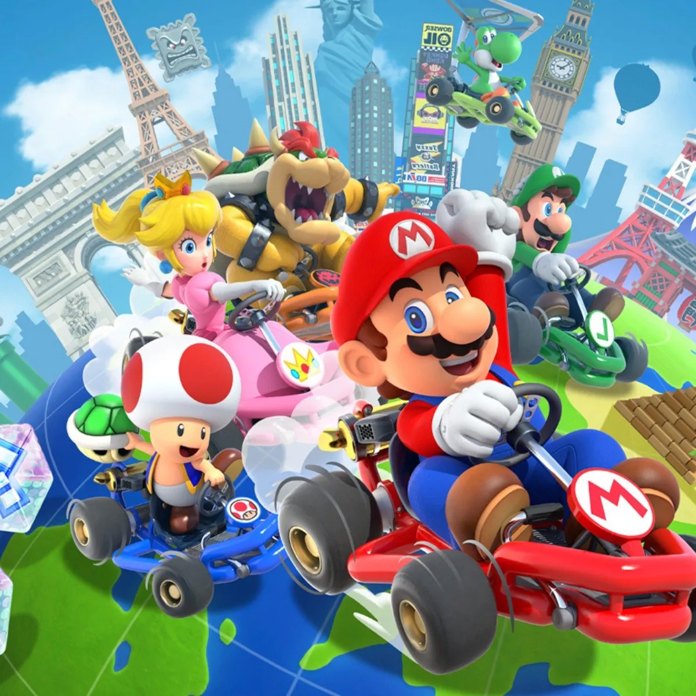

Mario Kart8 Deluxe!!!
Mario Kart™ 8 Deluxe
Mario Kart 8 es un videojuego de carreras desarrollado y publicado por Nintendo para la consola Wii U. Es la undécima entrega de la serie Mario Kart, octava en consolas de Nintendo.
Cuenta con estos modos de juego:
- Grand Prix — Modo de juego de uno a cuatro jugadores. Los jugadores deberán correr por 4 pistas que componen una de las 12 copas, mientras corre junto a las CPU.
- Contrarreloj — Modo de un solo jugador en el que se disputa una carrera en cualquier circuito sin rivales para conseguir el mejor tiempo.
- Versus — Modo de uno hasta cuatro jugadores, se juega cualquier circuito en frenéticas carreras con nuestras propias reglas.
- Batalla — Batalla para una y hasta cuatro personas en el que se utilizan objetos para intentar explotar los tres globos que se encuentran enganchados a cada adversario.
- Multijugador en línea — Juega contra rivales o amigos de todo el mundo en cualquier pista. Puedes fabricar torneos con tus propias reglas de juego, utilizar funciones de chat de voz mientras esperas jugadores o texto predefinido si así lo desea el jugador.
- Mario Kart TV — Permite utilizar repeticiones o fotografías hechas por el jugador a modo de homenaje a su carrera finalizada en pista, para mostrarlas posteriormente en la red social Miiverse y poder comentar en ellas. También se puede subir estas repeticiones de los mejores momentos directamente a YouTube (ya no está disponible).
- Tienda - Permite descargar sets DLC a través de Nintendo eShop.
La jugabilidad principal sigue siendo la misma de las ediciones anteriores de Mario Kart. Incluye el mismo diseño de Karts de Mario Kart 7, se puede planear con ala deltas y conducir bajo el agua como en la entrega anterior. Las motocicletas introducidas en Mario Kart Wii reapareceren. Y al igual que en la entrega anterior, se pueden personalizar los karts y las motos. El juego, además implementa por primera vez en la serie, cuatrimotos que disponen de buen manejo, y circuitos antigravedad, lo cual permite al jugador conducir sobre las paredes, tejados, laderas o incluso en tramos al revés recordando a las físicas de Super Mario Galaxy.
Las carreras vuelven a ser de 12 contendientes como en Mario Kart Wii y no 8 como en Mario Kart 7. Es además la primera entrega de la saga en la que sus gráficos son de alta definición a 1080p y a 60 imágenes por segundo incluso dividida la pantalla para 2 jugadores. Acerca del sonido, la música es orquestada prácticamente en todos los circuitos. También hay posibilidad de crear torneos en el modo en línea.

Compite con tus amigos en carreras o en el modo batalla, que incluye circuitos nuevos y otros ya conocidos. Juega en el modo local y en 1080p en partidas de hasta 4 jugadores en el modo televisor. Todos los circuitos de la versión de Wii U, incluyendo el contenido descargable, están disponibles.
Además, ¡los inklings aparecen como personajes invitados junto con otro personajes de juegos anteriores, como el Rey Bú, Huesitos y Bowser Jr!
No te arrepentiras de esta compra!